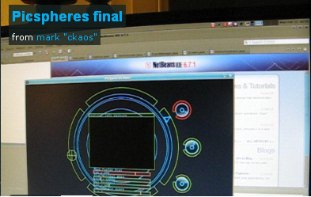

 Hello everyone,
This is a project that was done for my "man machine interface/ multimedia" course at university, with quite a few additions. Without further ado , here is a small presentation video , more info , source code etc after the break.
Picspheres final from mark "ckaos" on Vimeo.
The aim was to come up with a way to display 100+ photos in a photo-gallery, with original input methods being a bonus, it was written in Processing, with some additional Java elements.
Because of performance issues , i decided not to use openCV , but write my own blob detection/ tracking programming , using Gstreamer for the webcam feed acquisition, as well as a small gesture recognition system based on vector product.
Here are some of the features:
I learned a great deal with this project, both in the field of image analysis , blobs tracking and gesture recognition, but on the practical side i must confess that spending half a day perfecting the calibration of gesture recognition make me doubt the usability_ of purely gesture based User Interfaces in a work environment (à la "Minority report") , as it seems **_way too tiresome**, but then again it could just be the problems of my specific implementation of such a system.
On the other hand, i might one day adapt it to be usable with a system like the "_Eye writer_" (quite an amazing project : you can check it out here), which seems someone more natural , and less prone to require excessive movements (my neighbors by now most probably think i'm crazy to continually wave my hands around in front of the screen).
I confess i love futuristic interfaces (from the Ghost in the Shell anime/manga and the Mass Effect 2 game specifically ), so that might show here :)
The program was tested on Windows Xp , Windows Seven and Ubuntu_ and should normally run even on relatively old machines. If you want to try it out using your own pictures , just copy them into the **_data/testPics** or data/testPics2 folder:
{kind=link}